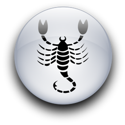

Женщина Овен и Мужчина Скорпион
-


Мужчина-Скорпион постигает жизнь, видя самую суть. Он обладает почти сверхчеловеческой способностью смотреть в лицо любым фактам. Так что это может немного испугать - когда он пускает вас за кулисы, чтобы показать, что на самом деле кроется за его маской непоколебимой уверенности в себе. Что делает женщина, когда ей открывают секрет, подобный этому? Если она Овен, то влюбляется с невообразимой силой.
Он, может быть, посвятит ее в то, что никогда не открывал кому-либо еще. Это потому, что он восхищается отсутствием женского коварства в ее натуре. Его трогает ее верность, ее свежая невинность и вера в него. Каким-то образом мужчина-Скорпион чувствует, что женщина-Овен, в отличие от представительниц других cолнечных знаков, не использует противного знание его природы. Месть никогда не бывает оружием Овна. Хотя Скорпион признает возмездие и использует его сам, он странным образом ценит отсутствие такого качества у Овна. Любовь этих двоих может быть очень глубокой, так как оба хотят выпить чашу любви до конца, до последней капли удовольствия, и эмоционально они подходят друг другу. Зато интеллектуально они различны настолько, насколько могут быть различны два непохожих человека.
Он подозрителен, критичен, осторожен и скептичен. Она беззаботна, пряма, импульсивна и простая. Такая разница может направить их отношения по одному из двух путей. Это может прибавить интриги и блеска их отношениям (противоположности, как известно, притягиваются), или расстояние между ними станет равно пропасти, и они сочтут невозможным общаться даже на тех уровнях, когда похожи и приятны друг другу.
Прежде всего этот мужчина задает своей избраннице несколько вопросов, испытывая ее, и никто не задает их более тщательно, чем Скорпион, даже когда он спрашивает только глазами. Примет ли она холодную жесткую правду, которую он будет частенько преподносить ей, достаточно мягко, ведь он уважает ее? (Мягкость? Он, должно быть, смеется.) Не испугается ли она его легчайшего скорпионьего укуса? Нет, она ничего не боится. Будет ли она, выходить из себя, когда он проведет несколько часов наедине с хорошенькой девушкой, рассуждая об астральных телах и древних обрядах ведьм? Нет. Она не будет сердиться и ревновать. Она займется собственными делами. Несмотря на ответы, которые он получил на совместимость, мужчина-Скорпион верит, что может научить эту девушку быть спокойной. Кроме того, ее жизненный дух и яркая независимость очаровывают его.
Сложности начнутся тогда, когда он поймет, что никогда не заставит ее полностью контролировать эмоции и что ей не достичь его собственного холодного равновесия. Тогда ее жизнелюбие и независимость, которые казались ему такими яркими добродетелями, могут потерять свою привлекательность. Если это им не мешает, может быть, он примет ее агрессивность - ему нравится видеть ее сильной. Но если она попытается использовать это против его собственной натуры, он повернется, как скорпион, на хвост которого наступили, и ударит. Скорпионы известны своей мстительностью, даже если их обидели случайно. Да и кто бы наступил на скорпионий хвост намеренно? Только Овен.
Когда Скорпион сталкивается с трудной ситуацией, он не тратит времени, пытаясь отодвинуть препятствие, как Телец, изобретая планы, как ее избежать, словно Весы, или принимая ее как фатальную, что свойственно Рыбам. Ему это препятствие необходимо полностью уничтожить. Если это религиозная догма, которую кто-то пытается вдолбить ему в голову, то просто атаковать церковников - это пустячное действие, ниже его плутоновской мощи. Он бросится уничтожать корни и ветви всей религии и станет воинствующим атеистом. Если опасный преступник врывается в его дом, то просто помочь представителям закона арестовать его - слишком мягко. Обман, преступление угрожали ему самому, поэтому они должны быть стерты с лица земли. Если это любовная травма, от которой он пострадал, то просто разорвать отношения недостаточно. Он направит невообразимую силу воли на жестокое проклятие всех интимных отношений и сам институт брака. Скорпион не признает полумер. Люди Плутона либо возносятся вверх, к небесам, либо срываются вниз, к аду. Вот почему они так интересны.
"Интересны", возможно, не совсем правильное слово, но любая управляемая Марсом женщина меня поймет. В этом есть зов мужественности, зрелости и силы. Все же для женщины-Овна, которой приглянулся Скорпион, было бы мудрым осторожно подумать сего плутоновской природе, прежде чем она подставит свой яркий огонь под поток ревущей воды.
Магнетизм Скорпиона практически всегда обеспечивает ему успех, к чему бы он ни стремился. Чтобы остаться бесстрастным при романтической атаке Скорпиона, нужна объективность, которой большинство Овнов не обладают. Она служит ему многими способами с удивительной понятливостью, а он дает ей сексуальное удовлетворение. В действительности их взаимообмен не всегда столь прост и ясен, но в основном для их отношений характерна любопытная тяга с ее стороны покориться этому мужчине, в то время как он удовлетворяет ее глубочайшее желание полной и вечной, но вполне земной любви, в которой она нуждается. Их сексуальное притяжение может проявляться до старости, и первоначальная страсть нисколько не потускнеет.
Единственная сложность в их сексуальных отношениях - это овновская склонность преувеличивать его сильное влечение к женщинам, вплоть до обвинений в неверности, а также типичная скорпионья подозрительность, заставляющая его видеть в ее свободном и дружеском обращении с мужчинами изощренный флирт. Ему бы стоило понять, что она слишком честна и полна идеалов, чтобы так просто изменить своей любви. И наоборот, она должна понять, что, несмотря на все его страстное внутреннее вовлечение в секс, Плутоновская концепция любви основана на чистоте и честности. Когда его нужды (а их не мало) удовлетворяются дома, его не тронут уловки других женщин, даже если его попытаются открыто соблазнить на улице (что всегда возможно со Скорпионами). А значит, верен он ей или нет, зависит только от нее.
Если она сможет терпеть его спокойное осознание собственного превосходства, раздражающее молчание, скрытность, более бережное, чем ее, отношение к деньгам, его стойкие представления о правильном и неправильном, даже когда они отличаются от ее собственных - она будет долго счастлива с этим человеком. Но женщине-Овну понадобится много терпения, а Овнам оно не дано. Ей может помочь осознание того, что твердые убеждения, за которые он так держится, выросли на подсознательном уровне из кармических семян взвешивания и балансирования предыдущего знака Весов. Это часть кармического процесса его духовного роста, и он не может поступать иначе.
Если он сможет смотреть сквозь пальцы на ее приступы ревности, финансовую несдержанность, частые требования внимания и в чем-то незрелый эмоциональный подход ко всем проблемам, он найдет в Овне всех женщин, которых он когда-либо искал. Но Скорпионы никогда и ни на что не смотрят сквозь пальцы.